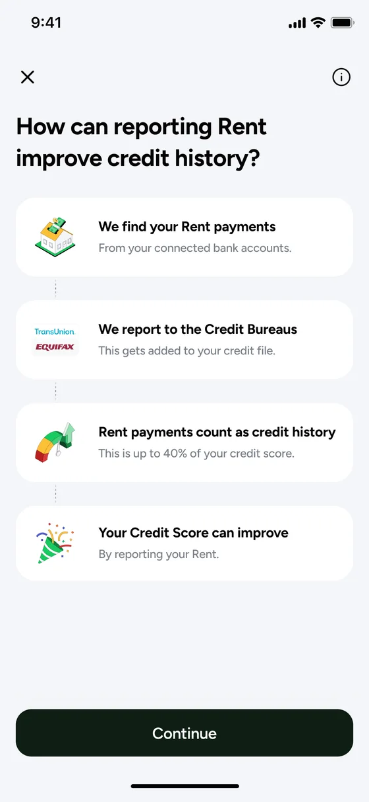
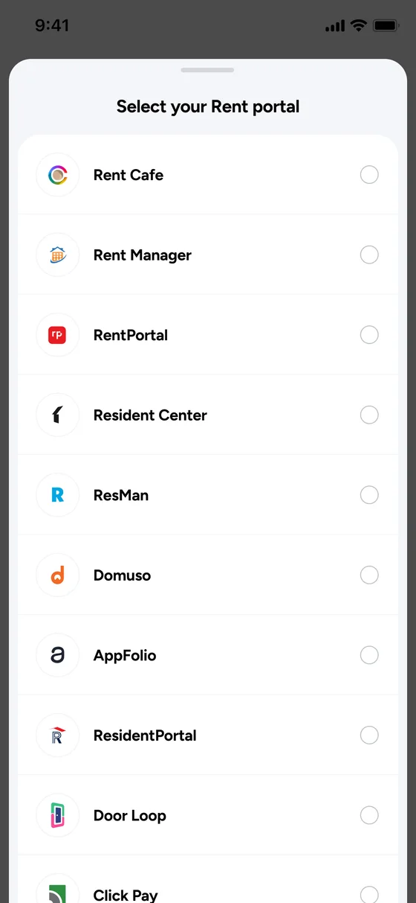
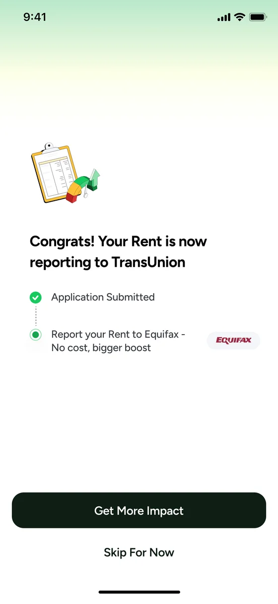
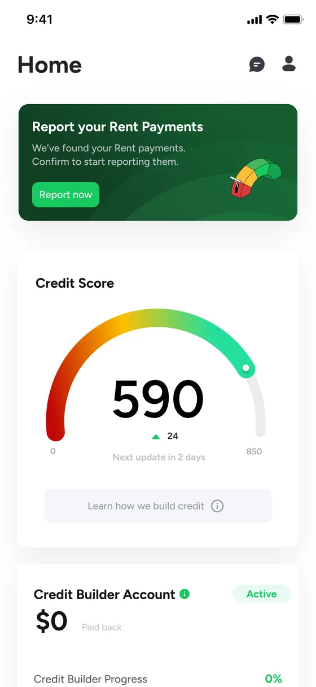
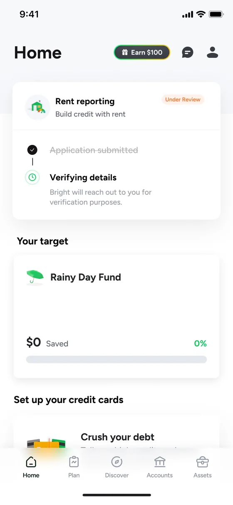
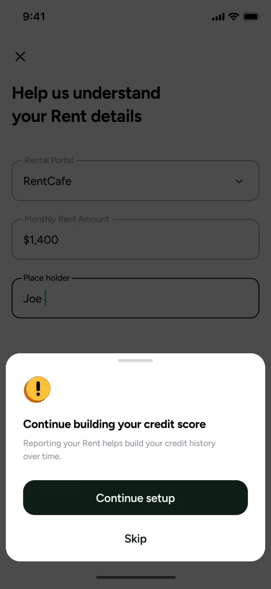

For millions of renters with thin credit files, the answer used to be no. Rent is the largest monthly expense most people have, but it doesn't show up on a credit report unless someone actively reports it. That gap is what this project was built to close.
Rent reporting lets users connect their rent portal and have their payment history reported to credit bureaus. For the target audience, users rebuilding or starting their credit, this is one of the fastest paths to a real score improvement.
I designed the end-to-end funnel. Portal selection, bureau reporting logic, opt-in and opt-out states, banners, widgets, and the disclosure layer. The goal was clear: make it easy for users to start reporting, and make the value obvious before they commit.
Three layers to the funnel.
The pitch screen needed to communicate one thing: your rent payments can count toward your credit score. No fine print first. Value first, then the steps.
Users pick their rent portal or indicate they don't have one. Reporting goes to TransUnion and Equifax, each with different handling. The design needed to account for both paths, the transition between them, and what users see when one bureau is active and the other isn't.
Banners on the Home Tab. Widgets in the Credit Tab. Opt-out users seeing a path back in. Each touchpoint with its own state logic based on the user's reporting status.






The full funnel: sign-up through reporting, with all bureau paths, portal selection, edge cases for users without a portal, and the widget and banner system surfacing the feature across the app.
Later, Equifax support was added to the funnel. A disclosure update moved the compliance layer into the Credit Tab.
Before signing off on the build, I held the design sign-off by a day. Frontend had unresolved issues. The PM was pushing to close the sprint. I flagged it to the Design Director and asked to sync with engineering the next morning before releasing.
"Well done. Push for quality always."Design Director
Sign-off is the last moment design has leverage over what ships. I'd rather delay by a day than approve something I know needs fixes.
The project should have taken four to six days. It took close to three weeks. Not because the design was complex. Because the inputs kept changing.
The spec had gaps. Copy was missing from the requirements. Edge cases for the portal selection flow and the skip/opt-out paths were not mapped before design started. I began designing around those gaps, and each one became a revision when the answers arrived late.
The bureau transition logic changed three times during the project. Each time was a re-alignment, not an iteration. The flow moved forward, then back, then forward again. Decisions made early were revisited after senior stakeholders reviewed, which meant screens already built had to be reworked to match an older direction.
Some of the banners I designed were cut after a later review found they didn't fit the updated approach. That time was spent. It didn't need to be.
After the project closed, I wrote a post-mortem. Not because anyone asked. Because I wanted the gap between the expected timeline and the actual one documented, with specific reasons, so I could hold myself to a better process next time.
When the requirements had no copy and unmapped edge cases, I started designing anyway. Every gap became a reversal. Pushing for the spec before starting would have been slower on day one and faster by day ten.
Every reason I listed in the post-mortem was visible by week two. A mid-project flag would have shortened the last stretch. I documented the problem after the timeline was already spent.
Shreyo Debnath · Product Designer